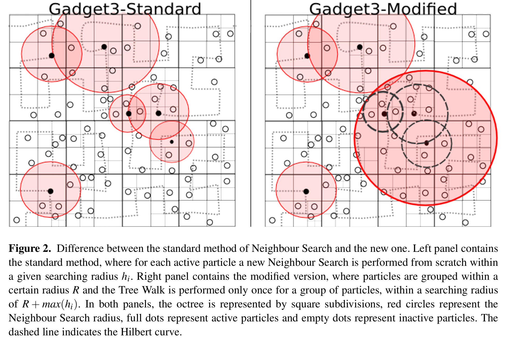
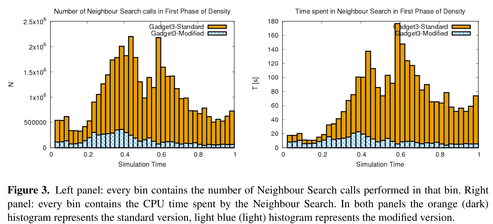
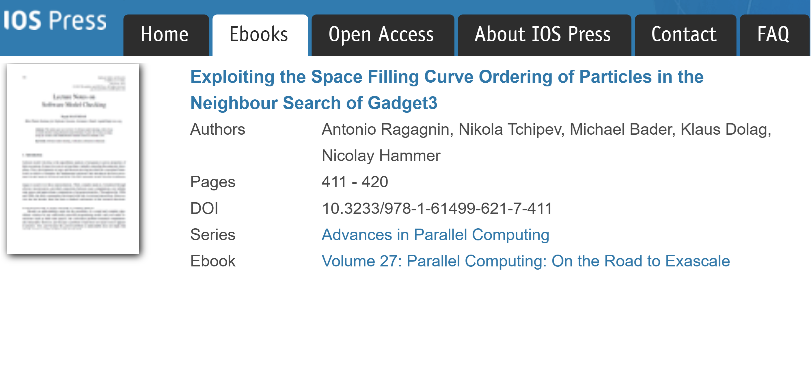

During my PhD, our numerical group was facing some slow-downs in running large cosmological hydrodynamic simulations with Gadget3 (at the time, private repo).
We used scalasca and profiled the hydrodynamic kernels runtimes of Magneticum simulations. We found that most of the time was not even spent actual physics computations, rather, most of the time was spent in the tree walk neighbour search!
| Component | Time [s] |
|---|---|
| Neighbour Search | 263 000 |
| Physics computation | 155 000 |
| MPI communication | 72 000 |
The Insight

Gadget3 orders its particles using a Hilbert space-filling curve for domain decomposition. The Hilbert curve has a key property: points nearby along the curve are also nearby in 3D space. So particles stored consecutively in memory are physically close, and physically close particles share most of their neighbours.
The fix, which I called Neighbour Recycling: instead of one tree walk per particle, group nearby particles together and perform a single tree walk for the whole group, over a slightly larger radius.
To handle Gadget3's wildly varying densities, the grouping radius is made adaptive:
R = f * smoothing lengthIn the paper Ragagnin et al. (2016) we find the optimal constant f = 0.5 was found numerically, and corresponds to each tree walk searching for roughly 3x speedup.
Results
Tested on the Magneticum box5/hr, simulation (18 Mpc/h, 2 x 813 particles, 8 MPI processes), The number of neighbour search drops drastically, close to a factor 10. Even if each search is slightly more expensive, the total speedup can still be very large.
Final remarks
The technique doesn't rely on anything Gadget3-specific beyond the space-filling curve ordering, which most modern N-body codes already use. If your code spends more time finding neighbours than computing physics, this idea is worth a look.
This technique can be activated in the SVN Gadget3 code by using the switches AR_GREENTREE_{DENSITY,HYDRA,CONDUCTION}.
And is activated by default in OpenGadget3 (see file CodeBase/greentree.hpp).

Bibtex entry:
@INPROCEEDINGS{Ragagnin2016GreenTree,
author={{Ragagnin}, Antonio and {Tchipev}, Nikola and {Bader}, Michael and {Dolag}, Klaus and {Hammer}, Nicolay J.},
title="{Exploiting the Space Filling Curve Ordering of Particles in the Neighbour Search of Gadget3}",
keywords = {Astrophysics - Instrumentation and Methods for Astrophysics, Computer Science - Performance},
booktitle = {Advances in Parallel Computing},
year = 2016,
month = may,
volume={41},
pages = {411-420},
doi = {10.3233/978-1-61499-621-7-411},
archivePrefix = {arXiv},
eprint = {1810.09898},
primaryClass = {astro-ph.IM},
adsurl = {https://ui.adsabs.harvard.edu/abs/2016pcre.conf..411R},
adsnote = {Provided by the SAO/NASA Astrophysics Data System}
}
Here below, I leave the PDF slides of a internal meeting presentation I gave in 2015.